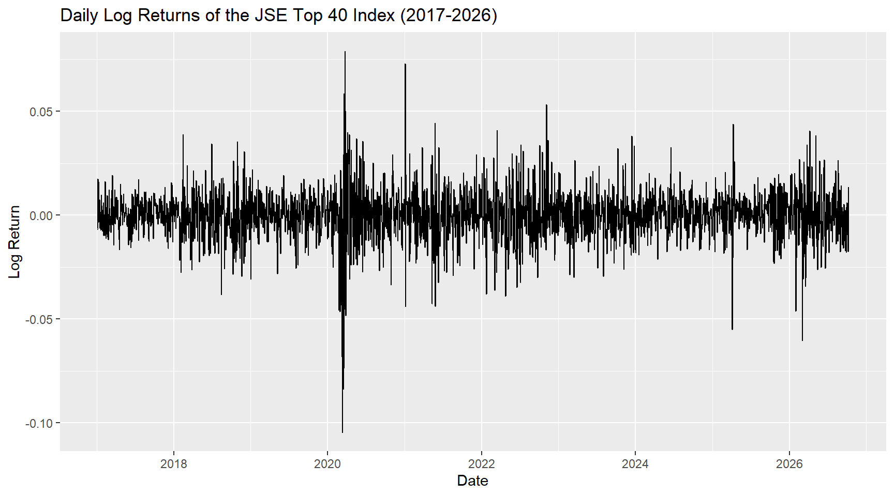
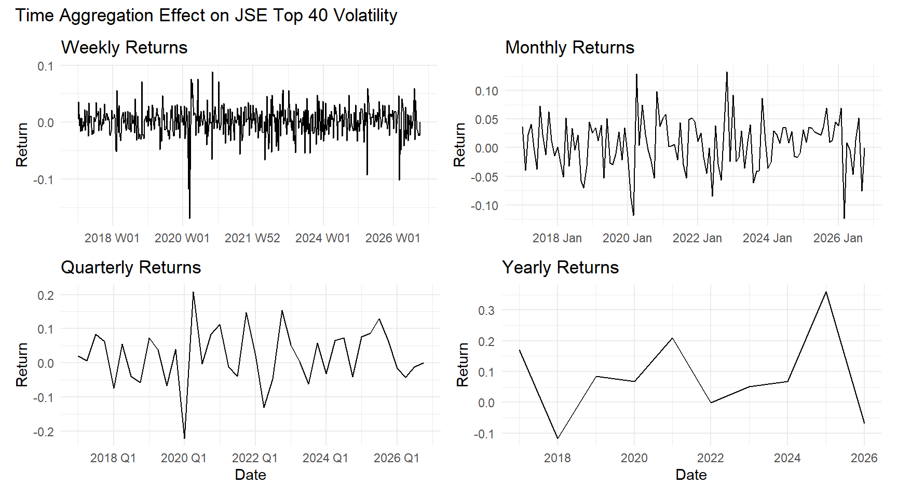
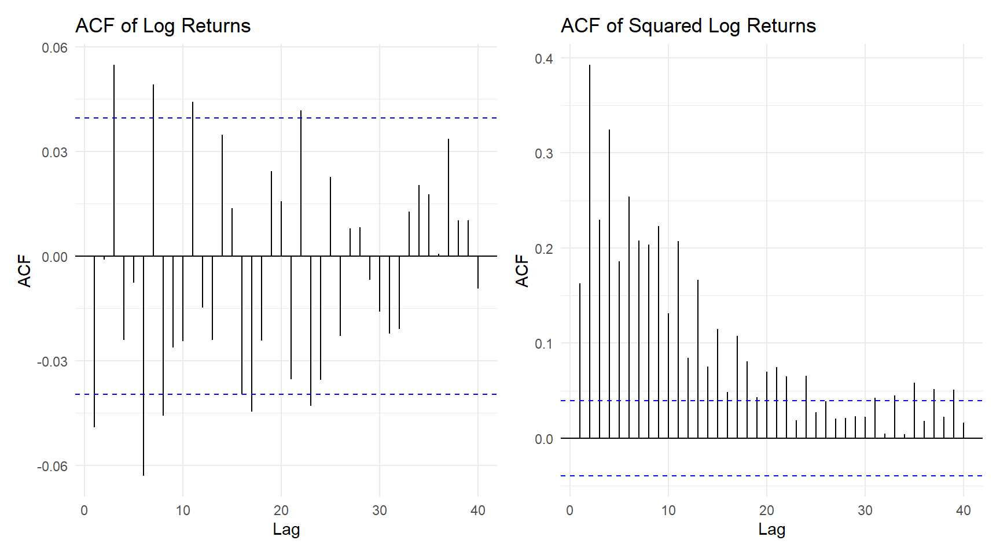
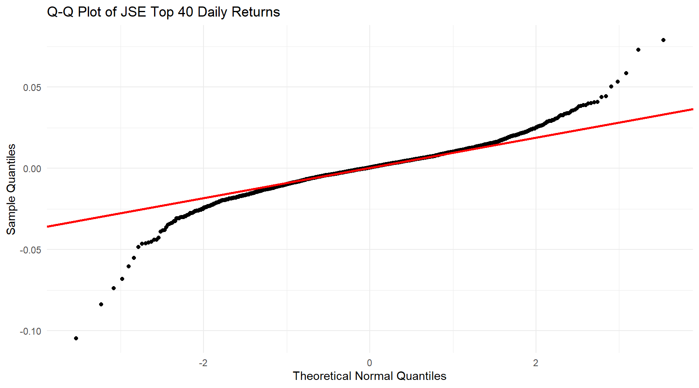
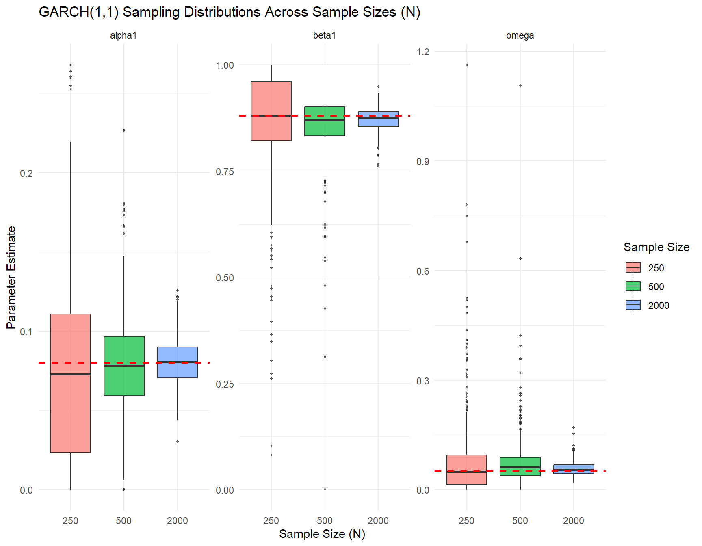

A Comparative Study of GARCH Models for JSE Top 40 Volatility
Author
Natalie Chidikwindi
Introduction
Equity prices are difficult to predict because markets respond to new information, including geopolitical events, economic developments, and company announcements. Although returns may be difficult to forecast, their volatility often exhibits patterns that can be modelled. In particular, periods of large price movements tend to cluster together, as do periods of relatively small movements.
The ARCH and GARCH frameworks provide methods for modelling this time-varying volatility. The standard GARCH(1,1) model is widely used because it captures volatility clustering and persistence with relatively few parameters. However, it treats positive and negative shocks of equal magnitude symmetrically. In equity markets, negative shocks may have a larger effect on subsequent volatility than positive shocks of the same size, motivating the use of alternative GARCH specifications.
This project examines the volatility of daily FTSE/JSE Top 40 Index returns. A GARCH(1,1) model is first implemented from first principles, and its parameter estimates are compared with those obtained using the rugarch package. Standard GARCH, integrated GARCH, GJR-GARCH, exponential GARCH, and component GARCH models are then compared using information criteria and residual diagnostics. The selected model is evaluated through out-of-sample volatility forecasting.
Finally, a simulation study examines how accurately the rugarch estimator recovers known GARCH(1,1) parameters as the sample size increases.
The project addresses three questions:
Which GARCH specification provides the most suitable description of JSE Top 40 return volatility among the models considered?
How do the parameter estimates from the first-principles GARCH(1,1) implementation compare with those from rugarch, and what could explain any differences?
How do the bias and variability of GARCH(1,1) parameter estimates change as the sample size increases?
Data Cleaning and Preparation
Packages
The following packages are used to obtain and prepare the data, explore the return series, estimate volatility models, and present the results.
Data Source and Study Period
This study uses the FTSE/JSE Top 40 Index, which represents 40 of the largest eligible companies in the FTSE/JSE All Share Index, ranked by investable market capitalization. The index provides a measure of the performance of large companies listed on the Johannesburg Stock Exchange.
Daily index data are obtained from Yahoo Finance using the quantmod package and the ticker ^J200.JO. The requested download period runs from 2 January 2017 to 12 October 2026. The actual dates available in the downloaded series are reported below, as the requested period may include non-trading days.
Click to expand code
# Import the ticker for the SA40 Index getSymbols('^J200.JO', from ="2017-01-02", to ="2026-10-12")
[1] "J200.JO"
Click to expand code
# Renamed data setjse40 <- J200.JO# periodicity is extractedp <-periodicity(jse40)# fomated into a data frameinfo <-data.frame(Start_Date =as.character(start(jse40)),End_Date =as.character(end(jse40)),Frequency = p$label)# tableinfo |>kable(caption ="JSE Top 40 Data Information")
JSE Top 40 Data Information
Start_Date
End_Date
Frequency
2017-01-03
2026-10-09
day
The adjusted closing price series is used to calculate daily returns.
Click to expand code
jse40_adjclose <- jse40$J200.JO.Adjusted#Checking for missing valuesmissing_vals <-which(is.na(jse40_adjclose))missing <- jse40_adjclose[missing_vals,]missing
J200.JO.Adjusted
2017-05-01 NA
2017-06-16 NA
2017-08-09 NA
2017-09-04 NA
2017-09-25 NA
2017-12-25 NA
2017-12-26 NA
2020-09-09 NA
2021-01-04 NA
2021-01-22 NA
2021-02-15 NA
2021-02-17 NA
2021-03-03 NA
2021-05-05 NA
2021-05-11 NA
2021-05-25 NA
2021-05-31 NA
2021-06-10 NA
2021-07-05 NA
2024-02-19 NA
Missing Values
The initial inspection identified 20 missing adjusted closing prices. To retain these trading dates, a secondary dataset stored in SA40.csv was used to supply the missing observations.
Prices on overlapping dates were compared before combining the datasets to assess their agreement. Replacement observations must be matched by date because the two datasets may have different ordering or coverage. Using secondary closing prices also requires care if their definition differs from that of the primary adjusted closing price series.
The secondary dataset is cleaned below by correcting its quotation marks, converting the date column, and parsing the numeric fields.
Click to expand code
# reads in lines of the datasetother_dat <-readLines("SA40.csv", encoding ="UTF-8")# Removes the outer quotes wrapping each line and unescape internal quotesother_dat <-gsub('^"|"$', '', other_dat)other_dat <-gsub('""', '"', other_dat)# into a datasetother_dat <-read.csv(text = other_dat, check.names =FALSE)# cleaning the format of the dataother_dat_clean <- other_dat %>%mutate(Date =as.Date(Date, format ="%Y/%m/%d"),across(c(Price, Open, High, Low), ~parse_number(.x)),`Change %`=parse_number(`Change %`) /100,`Vol.`=parse_number(`Vol.`) *1e6 )# extracts the date and closing priceother_dat <- other_dat_clean[,c(1,2)]# making into a time series objectsa40 <-xts(x = other_dat$Price, order.by = other_dat$Date)
The missing observations are then filled using the secondary prices for the corresponding dates.
Click to expand code
# extract the closing price from the other dataset based on the missing closing pricesadded_vals <- sa40[missing_vals,]# fills in missing valuesfor (i in1:length(added_vals)){ k = missing_vals[i] jse40_adjclose[k,] = added_vals[i]}
Calculating the log returns
The analysis focuses on log returns rather than index levels. Log returns are additive over time, meaning that a return over several trading periods can be calculated by summing the individual log returns.
where \(P_t\) is the adjusted closing index value on trading day \(t\).
Click to expand code
log_ret <-CalculateReturns(jse40_adjclose, method ="log")# now to check for missing values here:missing_vals <-which(is.na(log_ret))missing <- log_ret[missing_vals,]log_ret<-na.omit(log_ret)#confrim missing value is dealt withmissing_vals <-which(is.na(log_ret))missing <- log_ret[missing_vals,]
The first price observation has no preceding observation within the dataset, so its return cannot be calculated. Removing this observation reduces the number of observations by one.
Final Dataset
The table below reports the study period, frequency, and number of observations in the cleaned price and return series.
Click to expand code
data_summary <-data.frame(Start_Date =as.character(start(log_ret)),End_Date =as.character(end(log_ret)),Frequency =periodicity(log_ret)$label,Price_Observations =NROW(jse40_adjclose),Return_Observations =NROW(log_ret))data_summary |>kable(caption ="Summary of the Cleaned Dataset")
Summary of the Cleaned Dataset
Start_Date
End_Date
Frequency
Price_Observations
Return_Observations
2017-01-04
2026-10-09
day
2448
2447
The cleaned dataset contains 2448 daily price observations and 2447 daily log returns. The return series covers the period from 04 January 2017 to 09 October 2026.
For exploratory analysis and plotting, the return series is converted into a tsibble.
Exploratory data analysis
This section examines the behaviour of JSE Top 40 log returns and assesses whether GARCH modelling is appropriate. The analysis considers volatility clustering, autocorrelation, and the distribution of returns, followed by formal tests for ARCH effects and dependence in squared returns
Daily Log Returns
The daily log return series is plotted below to examine how the magnitude of returns changes over time.
Click to expand code
# Converting to a tsibble so I can use the tidyverse for plottingtktbl <-tk_tbl(log_ret, preserve_index =TRUE, rename_index ="Date")JTOPI_ret <-as_tsibble(tktbl)JTOPI_ret |>autoplot(J200.JO.Adjusted) +labs(title ="Daily Log Returns of the JSE Top 40 Index (2017-2026)",y ="Log Return",x ="Date" )

The plot shows alternating periods of relatively small and large return movements. Large movements tend to occur close together, while quieter periods also cluster together. This pattern is known as volatility clustering and is a common characteristic of financial return series.
The most pronounced fluctuations appear in 2020, coinciding with the COVID-19 pandemic and the associated disruption to financial markets. Further periods of elevated volatility are visible at the beginning of 2021 and during 2022, when Russia’s invasion of Ukraine increased geopolitical and economic uncertainty.
Elevated volatility is also visible during parts of 2025 and early 2026. Potential contributing factors include developments in commodity and precious metals markets, as well as US and Israeli attacks on Iran and the associated uncertainty surrounding oil prices and commodity markets. These explanations provide context for the observed movements, although the return plot alone cannot establish a causal relationship between particular events and changes in volatility.
In contrast, the period before 2018 and parts of late 2024 appear comparatively calm. Overall, the concentration of large and small return movements into distinct periods suggests that return variability changes over time, motivating further investigation of conditional variance models.
Returns at Different Time Frequencies
Daily log returns are aggregated into weekly, monthly, quarterly, and yearly returns. Since log returns are additive over time, each aggregated return is calculated as the sum of the daily log returns within the corresponding period.
# plots for each aggregationp_week <- weekly |>autoplot(ret) +labs(title ="Weekly Returns", x =NULL, y ="Return") +theme_minimal()p_month <- monthly |>autoplot(ret) +labs(title ="Monthly Returns", x =NULL, y ="Return") +theme_minimal()p_quarter <- quarterly |>autoplot(ret) +labs(title ="Quarterly Returns", x ="Date", y ="Return") +theme_minimal()p_year <- yearly |>autoplot(ret) +labs(title ="Yearly Returns", x ="Date", y ="Return") +theme_minimal()(p_week | p_month) /(p_quarter | p_year) +plot_annotation(title ="Time Aggregation Effect on JSE Top 40 Volatility")

Weekly returns retain some of the short-term fluctuations visible in the daily series. As the aggregation period increases, fewer observations remain, and individual daily movements become less visible.
The smoother appearance of the lower-frequency plots does not necessarily imply lower volatility. These plots show cumulative returns over different horizons, and their scales differ. In addition, the first and last aggregated periods may be incomplete because the dataset begins and ends within a calendar period.
Stylised Facts of Financial Returns
Four characteristics commonly examined when assessing financial return series are:
Weak autocorrelation in returns.
Persistent autocorrelation in squared returns.
Volatility clustering.
Heavy-tailed return distributions.
Volatility clustering was evident in the daily return plot. The remaining characteristics are examined below.
Autocorrelation in Returns and Squared Returns
The autocorrelation function (ACF) is used to examine linear dependence in returns. The ACF of squared returns provides an indication of whether the magnitude of returns exhibits persistent dependence.
Click to expand code
r <- JTOPI_ret$J200.JO.Adjusted# plotting using patchworkp_acf <-ggAcf(r, lag.max =40) +ggtitle("ACF of Log Returns") +theme_minimal()p_acf_sq <-ggAcf(r^2, lag.max =40) +ggtitle("ACF of Squared Log Returns") +theme_minimal()p_acf | p_acf_sq

The ACF of log returns contains some significant spikes, but these do not form a clear, persistent pattern across the displayed lags. This suggests that linear dependence in returns is relatively limited, although the significant spikes warrant consideration when specifying the mean equation.
In contrast, the ACF of squared returns shows more persistent autocorrelation, with a gradual decline across lags. This indicates that the magnitude of a return is related to the magnitude of previous returns, even when the direction of returns is difficult to predict. This pattern is consistent with volatility clustering and supports investigating a time-varying conditional variance model.
Distribution of Returns
A normal quantile–quantile (Q–Q) plot is used to compare the empirical distribution of daily returns with a normal distribution.
Click to expand code
r_vals <-as.data.frame(r)#plot to check for nromalityggplot(r_vals, aes(sample = r)) +stat_qq() +stat_qq_line(color ="red", linewidth =1) +theme_minimal() +labs(title ="Q-Q Plot of JSE Top 40 Daily Returns",x ="Theoretical Normal Quantiles",y ="Sample Quantiles" )

The observations deviate from the reference line in the tails, indicating that extreme returns occur more frequently than would be expected under a normal distribution. This provides visual evidence of heavy tails.
Kurtosis provides an additional descriptive measure of tail behaviour. The calculation below uses Pearson kurtosis, for which a normal distribution has a value of 3.
Click to expand code
pearson_kurtosis <-kurtosis(r)
The Pearson kurtosis is 6.616. A value greater than 3 is consistent with heavier tails than those of a normal distribution.
Heavy tails describe the unconditional distribution of returns; they do not, by themselves, establish that conditional variance changes over time. Evidence of time-varying conditional variance is assessed more directly using the tests below.
Formal Tests for ARCH Effects and Serial Dependence
Engle’s ARCH-LM Test
Engle’s ARCH-LM test is used to assess whether squared innovations exhibit dependence on their past values. For this preliminary test, returns are centred by subtracting their sample mean, consistent with the proposed constant mean specification.
Using 12 lags, the hypotheses are:
\(H_0\): There are no ARCH effects up to lag 12.
\(H_1\): ARCH effects are present at one or more of these lags.
ARCH LM-test; Null hypothesis: no ARCH effects
data: r
Chi-squared = 557.88, df = 12, p-value < 2.2e-16
The p-value is <0.001. A p-value below 0.05 leads to rejection of the null hypothesis at the 5% significance level and provides evidence of ARCH effects.
Such a result supports modelling conditional variance using an ARCH or GARCH specification, although it does not identify which particular model is most suitable.
Ljung–Box Test on Squared Returns
The Ljung–Box test is applied to squared returns to assess whether they exhibit serial correlation across the first 10 lags. It is a joint test across these lags, rather than a test of lag 10 alone.
The hypotheses are:
\(H_0\): Squared returns have zero autocorrelation at lags 1 through 10.
\(H_1\): Squared returns have non-zero autocorrelation at one or more of these lags.
Click to expand code
r2 <- r^2lb_squared <-Box.test(r2, type ="Ljung-Box", lag =10)lb_squared
The p-value is <0.001. A p-value below 0.01 leads to rejection of the null hypothesis at the 1% significance level, providing evidence of serial dependence in squared returns.
Together with volatility clustering and the ARCH-LM test, significant dependence in squared returns supports the use of a time-varying conditional variance model.
Implications for Model Selection
The exploratory analysis identifies volatility clustering, persistent dependence in squared returns, and a heavy-tailed return distribution. These features motivate the comparison of GARCH models and the consideration of a heavy-tailed innovation distribution.
The formal tests assess whether the evidence against a constant conditional variance is statistically significant. Model comparison and residual diagnostics are then needed to determine which GARCH specification adequately captures the observed dependence.
Mean Equation Specification
A constant mean equation is adopted as the initial specification:
where \(\mu\) is the conditional mean return, \(\sigma\_t\) is the conditional standard deviation, and \(z_t\) is an innovation with mean zero and variance one.
This specification provides a parsimonious starting point because the ACF of returns does not show a clear, persistent pattern. However, the isolated significant autocorrelations mean that a constant mean should be treated as a modelling choice rather than an established property of the series.
After fitting each GARCH model, the standardised residuals are checked for remaining serial correlation. If meaningful dependence remains, an ARMA mean specification may need to be considered.
GARCH Model Fitting
GARCH(1,1) Model from First Principles
The generalised autoregressive conditional heteroskedasticity (GARCH) model describes conditional variance as a function of past squared innovations and past conditional variances. Under suitable conditions, it can be represented as an ARCH model with infinitely many lags, providing a parsimonious way to capture the persistent effects of past shocks.
The GARCH(1,1) model with a constant mean is specified as
\(\alpha\) measures the immediate response of volatility to a shock.
\(\beta\) measures the persistence of past conditional variance.
\(z_t\) is a standardized innovation with mean zero and variance one.
The conditions \(\omega \> 0\), \(\alpha \geq 0\), and \(\beta \geq 0\) ensure positive conditional variances. The additional condition \(\alpha + \beta \< 1\) implies a finite unconditional variance under the standard model assumptions.
Recursive Variance Calculation
The model is implemented from first principles using a recursive loop. The initial conditional variance is set equal to the sample variance of returns. Each subsequent conditional variance is calculated using the previous squared innovation and conditional variance.
Returns are multiplied by 100 before estimation to improve numerical scaling. The resulting series therefore expresses log returns in percentage units.
Click to expand code
ret_perc <-as.numeric(r) *100# scaled because optim struggles with small values # function for garch implementation once optimal values are foundgarch_func <-function(par, ret) { mu = par[1] omega = par[2] alpha = par[3] beta = par[4] eps = ret - mu sig1 =numeric(length(ret)) sig1[1] <-var(ret)# loop for garch model translating an arch model that is somewhat infinitefor (i in2:length(ret)) { sig1[i] = omega + alpha * eps[i -1]^2+ beta * sig1[i -1] }list(eps = eps, sig1 = sig1)}
Likelihood and Parameter Estimation
For the first-principles implementation, the standardised innovations are assumed to follow a normal distribution. Conditional on the initial variance, the Gaussian negative log-likelihood is
The optimiser searches for the parameter values that minimise this expression, which is equivalent to maximising the likelihood. Parameter combinations that violate the variance constraints are assigned a large penalty.
# coefficients and standard errors for estimated parameterserrors <-sqrt(diag(solve(g11$hessian)))round(cbind(Estimate = g11$par,SE = errors,z = g11$par / errors),4)
Estimate SE z
mu 0.0582 0.0208 2.7952
omega 0.0412 0.0136 3.0287
alpha 0.0841 0.0147 5.7192
beta 0.8883 0.0215 41.3510
The optimizer returned a convergence code of zero, indicating successful numerical termination. The estimated standard errors were relatively small, although these are approximate Hessian-based standard errors under the Gaussian likelihood specification. Numerical convergence alone does not establish that the model is correctly specified or that the global optimum has been found.
Volatility Persistence
For a standard GARCH(1,1) model, volatility persistence is measured by \(\alpha + \beta\). Values close to one indicate that the effects of shocks decay slowly.
The estimated persistence is 0.97233, indicating that volatility shocks are persistent. Since this value is below one, the model implies a finite unconditional variance:
Because returns were scaled by 100, this variance is expressed in squared percentage units.
Comparison with the rugarch Package
The first-principles estimates are compared with a standard GARCH(1,1) model fitted using rugarch. The package model uses a constant mean and standardised Student’s t innovations to accommodate the heavy tails identified in the exploratory analysis.
mu omega alpha1 beta1 shape
0.0641 0.0386 0.0762 0.8968 6.2416
In the reported results, the rugarch model has a larger variance intercept and a larger coefficient on past conditional variance, but a smaller coefficient on the previous squared innovation than the first-principles model. This suggests a weaker immediate response to shocks and a greater contribution from past conditional variance.
However, the two implementations use different innovation distributions. The first-principles model uses a Gaussian likelihood, whereas the package model uses a Student’s t likelihood. Their estimates therefore need not coincide. Differences in variance initialization, optimization methods, and parameter constraints may also contribute.
A direct implementation check would require both models to use the same innovation distribution and comparable estimation settings.
Alternative GARCH Specifications
Four additional GARCH specifications are fitted to examine whether they capture features that the standard model does not. All package models use a constant mean and standardized Student’s t innovations.
Integrated GARCH
The integrated GARCH (iGARCH) model imposes
\[
\alpha + \beta = 1.
\]
Its persistence is therefore exactly one, rather than simply close to one. Under the usual specification with a positive intercept, the model does not have a finite unconditional variance, and volatility shocks do not decay in the same way as in a stationary standard GARCH model.
The indicator equals one when the previous innovation is negative and zero otherwise. Positive innovations therefore have a coefficient of \(\alpha\), while negative innovations have a coefficient of \(\alpha+\gamma\). If \(\gamma\>0\), negative innovations increase conditional variance more than positive innovations of the same magnitude.
The exponential GARCH (eGARCH) model describes the logarithm of conditional variance. Exponentiating the fitted log variance ensures that conditional variance is positive, so the same non-negativity constraints used in the standard GARCH model are not required. The model also allows asymmetric responses to innovations.
The component GARCH model separates conditional variance into a time-varying long-run component and a transitory component. This allows short-run volatility movements to be distinguished from more persistent changes in the underlying volatility level.
The fitted models are compared using the Akaike information criterion (AIC), Bayesian information criterion (BIC), and residual diagnostic tests. Lower information criteria indicate a more favourable balance between fit and model complexity.
Diagnostic tests assess whether dependence remains after fitting the model. The Ljung–Box test on standardised residuals examines remaining serial correlation in the mean, while the test on squared standardised residuals examines remaining dependence in their magnitude. The ARCH-LM test provides an additional check for remaining ARCH effects.
Click to expand code
# fitted models stored in 1 listmodels <-list("GARCH(1,1)"= fit_g11,"iGARCH(1,1)"= fit_ig11,"gjrGARCH(1,1)"= fit_gjrg11,"eGARCH(1,1)"= fit_eg11,"csGARCH(1,1)"= fit_csg11)# function to evaluate model for each one# information required:# Information Criteria# Diagnostic p-values evaluate_model <-function(fit) { ic <-infocriteria(fit) k <-length(coef(fit)) N <- fit@fit$N aic <- ic["Akaike", 1] aicc <- aic + (2* k * (k +1)) / (N * (N - k -1)) bic <- ic["Bayes", 1]# extracts standardized residuals res <-residuals(fit, standardize =TRUE) z2 <- res^2# extracts the p-value from diagnostic tests lb_res <-Box.test(res, lag =12, type ="Ljung-Box", fitdf =1)$p.value lb_z2 <-Box.test(z2, lag =12, type ="Ljung-Box", fitdf =2)$p.value arch <-ArchTest(as.numeric(res))$p.value# formattingc(AIC = aic, BIC = bic, LB_p = lb_res, LB_Sq_p = lb_z2, ARCH_p = arch)}# table comparison_table <-t(sapply(models, evaluate_model))round(comparison_table, 4) |>kable(caption ="Model Selection and Diagnostic Test P-Values")
Model Selection and Diagnostic Test P-Values
AIC
BIC
LB_p
LB_Sq_p
ARCH_p.Chi-squared
GARCH(1,1)
2.9878
2.9996
0.0815
0.4601
0.6305
iGARCH(1,1)
2.9911
3.0005
0.1043
0.3995
0.5631
gjrGARCH(1,1)
2.9757
2.9899
0.0611
0.0999
0.1896
eGARCH(1,1)
2.9756
2.9898
0.0548
0.0001
0.0007
csGARCH(1,1)
2.9853
3.0019
0.0674
0.2212
0.3639
These conventional residual tests provide useful screening diagnostics, although their reference distributions are approximate when applied to residuals from estimated GARCH models. In particular, subtracting the number of variance parameters through the fitdf argument is not a general correction for GARCH estimation.
In the reported results, eGARCH has the lowest AIC and BIC. However, the diagnostics indicate remaining dependence in its squared standardised residuals, suggesting that it does not fully capture the volatility dynamics.
GJR-GARCH also has relatively low information criteria, while its Ljung–Box tests do not reject the null hypotheses of no remaining serial correlation in standardised residuals and their squares at the chosen significance level. Failure to reject these hypotheses does not prove that all dependence has been removed, but it provides a more favourable diagnostic assessment.
On this basis, GJR-GARCH(1,1) is selected as the preferred in-sample specification among the models considered. This choice balances fit with residual adequacy rather than relying on the lowest AIC alone.
Out-of-Sample Forecasting
Rolling Forecast Design
The GJR-GARCH model is evaluated using one-step-ahead rolling volatility forecasts. The initial estimation sample contains approximately 70% of the observations, with the remaining 30% used for forecast evaluation. Parameters are re-estimated every five observations using a moving estimation window.
Click to expand code
# window sized is determined and the refit period is set to be 5 days. window_size <-round(length(ret_perc) *0.7)refit_period <-5# rolling window forecast using rugarch roll_wind <-ugarchroll(spec = spec_gjrg11,data = ret_perc, n.ahead =1,forecast.length =length(ret_perc) - window_size,refit.every = refit_period,refit.window ="moving",solver ="hybrid")# Extract predictionsfc_gjrgarch <-as.data.frame(roll_wind)# Calculate variance and the realized proxy (squared returns)var_fc_gjrgarch <- fc_gjrgarch$Sigma^2realised_proxy <- fc_gjrgarch$Realized^2
Conditional variance is not directly observable, so squared realised returns are used as a proxy. This proxy is noisy and includes the contribution of the conditional mean; squared forecast errors would align more directly with conditional variance when the mean is non-zero.
Forecast Evaluation
Forecast performance is assessed using mean squared error (MSE) and a QLIKE loss:
where (v_t) is the squared-return proxy and (H) is the number of forecast observations. Lower values indicate better performance when comparing forecasts evaluated on the same observations and scale.
Click to expand code
# computes average loss metrics in the functions# Returns the mean of the loss seriescompute_loss_metrics <-function(realized_proxy, var_fc) { eps <-1e-8 safe_var <-pmax(var_fc, eps) mse_loss <- (realized_proxy - safe_var)^2 qlike_loss <-log(safe_var) + (realized_proxy / safe_var)data.frame(Mean_MSE =mean(mse_loss), Mean_QLIKE =mean(qlike_loss) )}loss_gjrgarch <-compute_loss_metrics(realised_proxy, var_fc_gjrgarch)loss_gjrgarch |>kable(digits =3,caption ="Rolling Forecast Losses for GJR-GARCH(1,1)" )
Rolling Forecast Losses for GJR-GARCH(1,1)
Mean_MSE
Mean_QLIKE
7.086
1.068
The mean MSE is 7.086, and the mean QLIKE is 1.068. The previously reported values were approximately 7.08 and 1.068, respectively.
These values summarize the forecast losses but do not establish whether forecasting performance is strong without a benchmark. Comparing GJR-GARCH with the other specifications or a simple variance forecast would provide a clearer assessment.
Although these forecasts are generated sequentially, the model specification was selected using the full dataset. A stricter out-of-sample assessment would select the specification using only the initial training sample before evaluating forecasts on the remaining observations.
Simulation Study
Purpose and Design
A simulation study is conducted to examine how GARCH(1,1) parameter estimation changes with sample size. Unlike the earlier first-principles implementation, this simulation uses rugarch for both data generation and model estimation.
The study assesses finite-sample bias, variability, and numerical convergence. It does not prove estimator consistency, although improving parameter recovery as the sample size increases would be consistent with the expected large-sample behaviour.
The data-generating model has a zero mean, normally distributed standardized innovations, and the following parameters:
Its persistence is (0.96), which is below one. Three sample sizes are considered: 250, 500, and 2,000 observations. Each setting is replicated 500 times, and the random seed is set to 123 for reproducibility.
Click to expand code
# true values for the synthetic exampleomega_true <-0.05alpha_true <-0.08beta_true <-0.88# true model specificationtrue_spec <-ugarchspec(variance.model =list(model ="sGARCH", garchOrder =c(1, 1)),mean.model =list(armaOrder =c(0, 0), include.mean =FALSE),fixed.pars =list(omega = omega_true, alpha1 = alpha_true, beta1 = beta_true),distribution.model ="norm")# sample sizes tested to determine that the estimate function works for for different sample sizessample_sizes <-c(250, 500, 2000)n_replications <-500run_simulation <-function(n_obs, n_reps, true_spec) { results <-matrix(NA, nrow = n_reps, ncol =4)colnames(results) <-c("converged", "omega", "alpha1", "beta1") fit_spec <-ugarchspec(variance.model =list(model ="sGARCH", garchOrder =c(1, 1)),mean.model =list(armaOrder =c(0, 0), include.mean =FALSE),distribution.model ="norm" )for (i in1:n_reps) { sim =ugarchpath(true_spec, n.sim = n_obs) sim_returns =as.numeric(fitted(sim))# Estimates model with error handling fit <-tryCatch(ugarchfit(fit_spec, data = sim_returns, solver ="hybrid"),error =function(e) NULL )# convergence check if (!is.null(fit) &&convergence(fit) ==0) { pars <-coef(fit) results[i, ] <-c(1, pars["omega"], pars["alpha1"], pars["beta1"]) } else { results[i, ] <-c(0, NA, NA, NA) } } dat <-as.data.frame(results) dat$N <- n_obsreturn(dat)}# running of simulationsset.seed(123)sim_results <-bind_rows(lapply(sample_sizes, run_simulation, n_reps = n_replications, true_spec = true_spec))
Bias, Variability, and Convergence
For each sample size, the convergence rate is calculated as the percentage of successful estimations. Bias is estimated as the average parameter estimate minus its true value, while the standard deviation measures variation across replications.
Where estimation fails, bias and standard deviation are calculated using only the converged fits.
Click to expand code
summary_stats <- sim_results %>%group_by(N) %>%summarise(Total_Reps =n(),Convergence_Rate =mean(converged) *100,# bias of estimatesBias_Omega =mean(omega, na.rm =TRUE) - omega_true,Bias_Alpha =mean(alpha1, na.rm =TRUE) - alpha_true,Bias_Beta =mean(beta1, na.rm =TRUE) - beta_true,# standard deviation of the estimatesSD_Omega =sd(omega, na.rm =TRUE),SD_Alpha =sd(alpha1, na.rm =TRUE),SD_Beta =sd(beta1, na.rm =TRUE) )summary_stats |>kable(digits =4,caption ="GARCH(1,1) Parameter Recovery Across Sample Sizes" )
GARCH(1,1) Parameter Recovery Across Sample Sizes
N
Total_Reps
Convergence_Rate
Bias_Omega
Bias_Alpha
Bias_Beta
SD_Omega
SD_Alpha
SD_Beta
250
500
100
0.0251
-0.0070
-0.0134
0.1081
0.0576
0.1304
500
500
100
0.0244
-0.0015
-0.0188
0.0766
0.0347
0.0848
2000
500
100
0.0076
0.0007
-0.0077
0.0194
0.0150
0.0261
In the reported results, all simulations converged. The absolute bias of the variance intercept decreases as the sample size increases.
The reaction coefficient, \(\alpha\), is underestimated in the smaller samples and becomes overestimated as the sample size increases, although the absolute bias becomes smaller. The persistence coefficient, \(\beta\), is underestimated across the sample sizes, with the magnitude of the bias also decreasing.
The standard deviations of all three parameter estimates decline as the sample size increases. Overall, the results suggest that larger samples improve estimation precision and bring the estimates closer to their true values under the specification considered.
Sampling Distributions
Box plots illustrate how the distributions of the parameter estimates change with sample size. Dashed horizontal lines indicate the true parameter values.
Click to expand code
# table created for the true values true_vals <-data.frame(Parameter =c("omega", "alpha1", "beta1"),True_Value =c(omega_true, alpha_true, beta_true))# data manipulation of the results so that plotting can occurplot_data <- sim_results %>%filter(converged ==1) %>%pivot_longer(cols =c(omega, alpha1, beta1), names_to ="Parameter", values_to ="Estimate")# box-plot of each parameter value for each of the simulated datasetsggplot(plot_data, aes(x =factor(N), y = Estimate, fill =factor(N))) +geom_boxplot(outlier.size =0.8, alpha =0.7) +geom_hline(data = true_vals, aes(yintercept = True_Value), color ="red", linetype ="dashed", linewidth =0.8) +facet_wrap(~ Parameter, scales ="free_y") +theme_minimal() +labs(title ="GARCH(1,1) Sampling Distributions Across Sample Sizes (N)",x ="Sample Size (N)",y ="Parameter Estimate",fill ="Sample Size" )

The narrowing distributions provide visual evidence of improved precision in larger samples. These findings apply to the chosen parameter values and normally distributed innovations. Further simulations would be needed to assess whether the same patterns hold under different persistence levels, innovation distributions, or model misspecification.
Discussion and Conclusion
The results suggest that the standard GARCH(1,1) model is a useful baseline but is not necessarily the most suitable specification for JSE Top 40 returns. Among the models considered, GJR-GARCH provides a favourable balance between in-sample fit and residual diagnostics.
This supports considering asymmetric volatility models for this dataset. However, selecting GJR-GARCH does not by itself establish that negative shocks have a significantly larger effect than positive shocks. That conclusion also requires examining the estimated asymmetry coefficient and its uncertainty.
The comparison between the first-principles and package implementations highlights the importance of the innovation distribution. Because the custom implementation uses normal innovations and the package model uses Student’s t innovations, differences in their estimates cannot be attributed solely to implementation.
The simulation results indicate that larger samples generally improve parameter recovery under the chosen GARCH(1,1) specification. However, the experiment evaluates the rugarch estimator and does not directly validate the first-principles estimation function.
Limitations and Further Work
Structural breaks were not investigated. Changes in the underlying volatility process could affect estimated persistence, and future work could examine whether persistence differs across market regimes or sub samples.
The first-principles implementation assumes normally distributed innovations despite the heavy tails observed in returns. Extending this implementation to use Student’s t innovations would allow a more comparable assessment against the package model. Implementing other GARCH specifications from first principles would also deepen the comparison.
Forecast evaluation was limited to GJR-GARCH and used squared daily returns as a noisy volatility proxy. Future work could compare forecasts across all candidate models, include a simple benchmark, and select models entirely within the training sample. Value-at-Risk forecasting and back testing could be investigated separately.
The simulation uses one parameter configuration and one innovation distribution. Additional experiments could consider higher persistence, heavy-tailed innovations, and alternative initialization or burn-in settings. To assess the custom estimator directly, the simulated series would need to be fitted using the first-principles likelihood and optimization functions.
Finally, the empirical analysis focuses on one share index. Applying the same approach to other indices would help assess how broadly the findings apply.
Reflection
This project strengthened my understanding of the volatility modelling process, from preparing financial data and identifying stylized facts to estimating models and evaluating their performance.
Implementing GARCH(1,1) from first principles helped me understand how its recursive variance equation captures the effects of past innovations and conditional variances. It also clarified how a GARCH model can represent the persistence associated with an infinite-order ARCH process.
I learned that the assumed innovation distribution affects both the likelihood and the resulting parameter estimates. Comparing the normal and Student’s t specifications helped me connect the heavy tails observed in the data with the modelling choices made during estimation.
The most challenging part was translating the GARCH equations into code while ensuring that I understood the role of each parameter and the constraints required for estimation. Exploring the wider GARCH family also helped me understand how alternative models represent asymmetry and different forms of volatility persistence.
References
Cowpertwait, P. S., & Metcalfe, A. V. (2009). Introductory Time Series with R. Springer.
Hyndman, R. J., & Athanasopoulos, G. (2021). Forecasting: Principles and Practice (3rd ed.). OTexts. Available at: https://otexts.com/fpp3/
Regenstein, J. K. (2018). Reproducible Finance with R: Code Flows and Shiny Apps for Portfolio Analysis. CRC Press.
Shumway, R. H., & Stoffer, D. S. (2017). Time Series Analysis and Its Applications: With R Examples (4th ed.). Springer.
Trading Economics. (2026). South Africa Top 40 Index Historical Data. [External CSV dataset used for continuity patching]. Available at: https://tradingeconomics.com/top40:ind
Yahoo Finance. (2026). Historical Data for JSE Top 40 Index. Retrieved using the quantmod package. Available at: https://finance.yahoo.com/